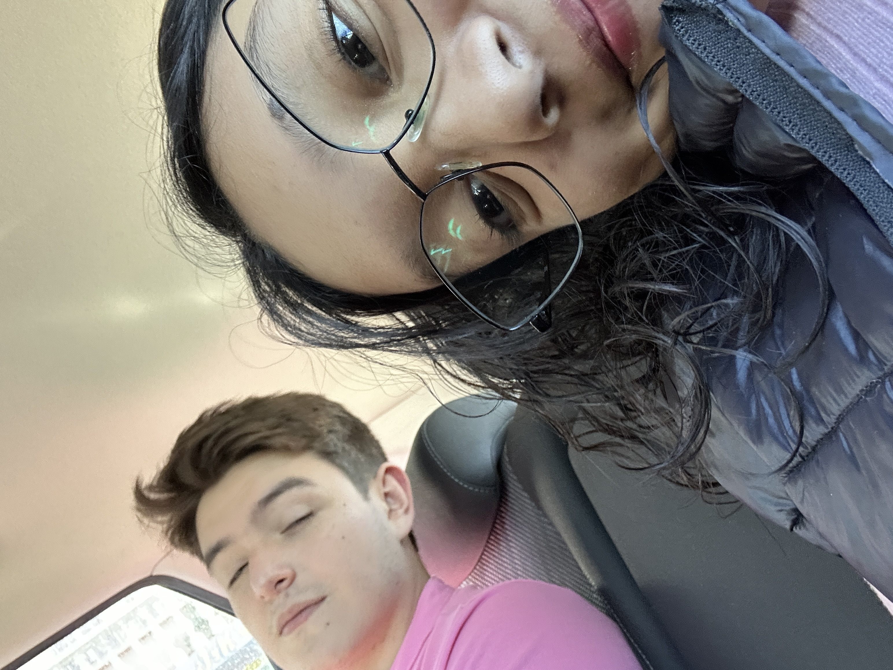
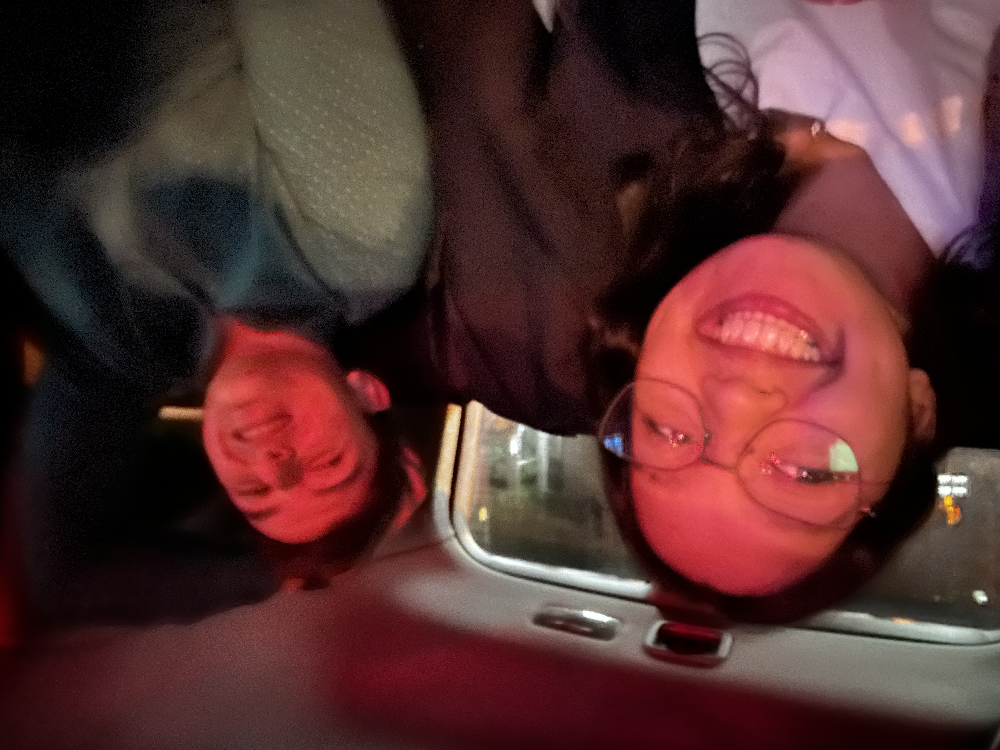
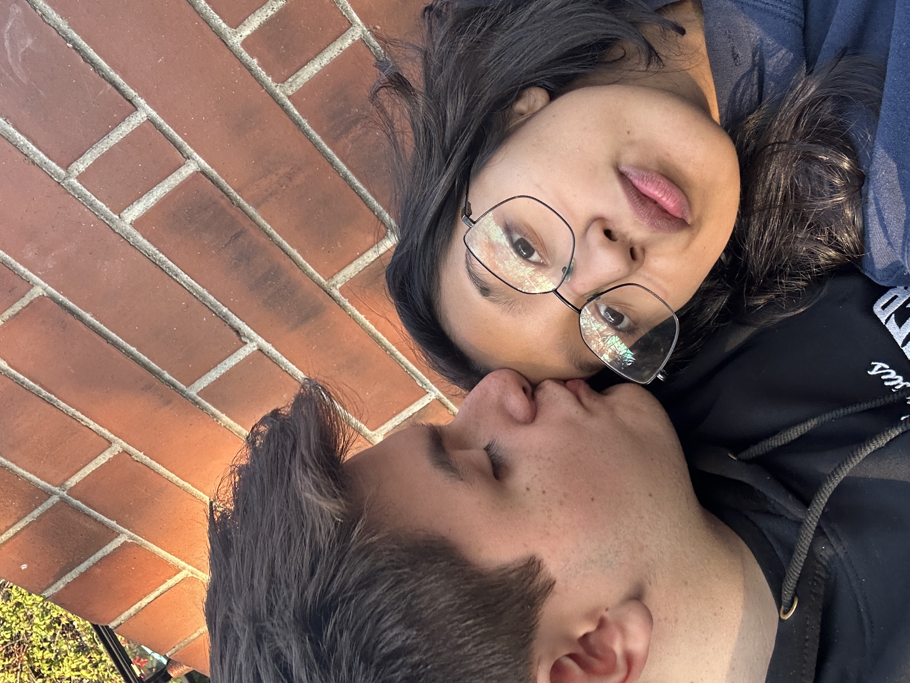
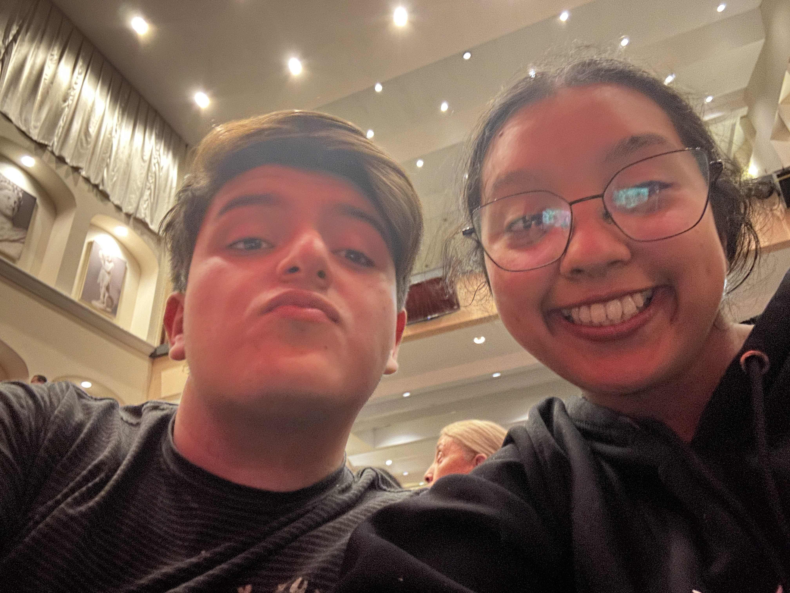

Nuestra historia
Cuando nos conocimos en el colegio no esperaba que llegaramos a todo esto. Ni de cerca. Pero estoy feliz que así haya sido.


La primera vez que salimos como amigovios. Nos agarramos de la mano y estuvimos solos viendo la película. Desde ahí supe.
Cuando te pedí que fuéramos novios. Ese momento que no voy a olvidar nunca.


Todas las veces que salimos solos, todas las veces que salimos acompañados. Cada una fue especial.
Y todas las veces que me has hecho sentir especial. Así como lo es hoy.